Lesson_3
Цікаві та маловідомі факти про демократичні традиції й постаті України, Крим, український космос
До 30-ї річниці Незалежності України команда Центру стратегічних комунікацій та інформаційної безпеки зібрала
30 цікавих фактів про нашу країну, що ілюструють демократичні традиції державного будівництва, нашу спільність
із Кримом, незламність і прагнення свободи. Зі святом!
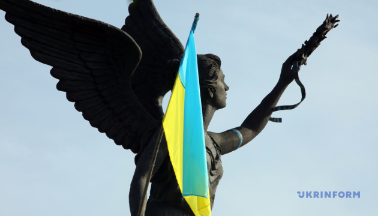
5 фактів про демократичні традиції на нашій землі
На думку вчених, трипільське суспільство було збалансоване й неієрархічно організоване –
з переговорами та самоврядуванням. Однак спроби обмежити і централізувати владу призвели до розпаду
трипільського суспільства.
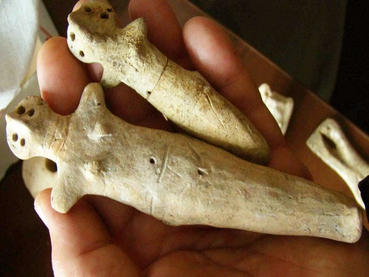
Візантійський історик Прокопій Кесарійський у своїй праці «Історія війн» описує склавинів та антів –
можливих предків українців – як людей, що непідвладні комусь одному. Вони вирішували усі справи спільно,
народовладдям.
Конституція Пилипа Орлика – перша українська та одна з перших європейських конституцій – запропонувала
розподіл влади на окремі гілки й критикувала «самодержавство».
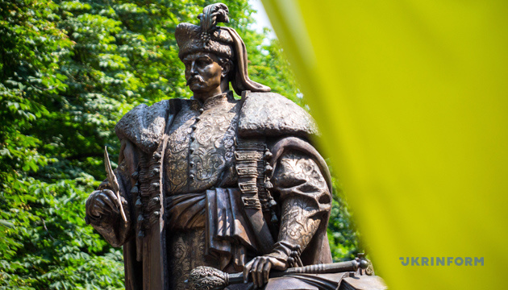
Конституція УНР 1918 року оголошувала, що суверенне право у країні належить народові, а завдання держави –
забезпечувати його права.
«Держава не сміє бути деспотичним ідолом-божком, якому служать позбавлені всіх людських прав раби. Держава…
слугує вільним громадянам, щоб створити їм найбільш пригожі умови для всебічного розгортання й вияву їхніх
творчих сил!» – писав «Вісник Президії Української головної визвольної ради», яка підпільно працювала під
час Другої світової війни.
5 фактів про Крим
«Вічна приязнь з Кримом»: цілий розділ Конституції Пилипа Орлика присвячений стосункам з Кримською державою,
які схарактеризовано як «сусідську дружбу», «давнє братерство», «вічну приязнь» і «побратимство».
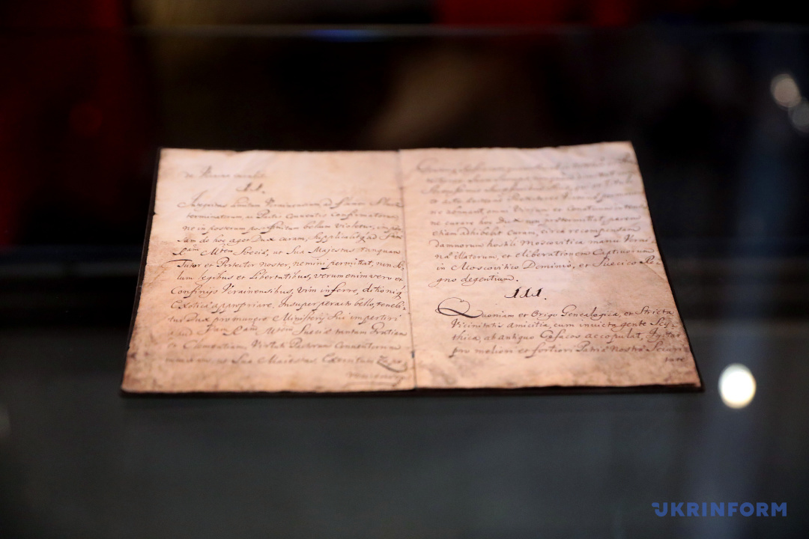
«Чорним століттям» називали кримські татари період після анексії Криму в 1783 році Російською імперією. До
цього протягом тисячоліть півострів жодним чином не був пов’язаний з Московією.
Українські козаки перемогли московитів разом з військами Кримського ханства – у битві під Конотопом вони
змагалися пліч-о-пліч проти спільного ворога. В битві взяли участь близько 40 тисяч кримських татар.
«Вперше в історії тюрків та ісламу». Перший мусульманський жіночий часопис у Криму випустили в 1917 році.
Його видавала Шефіка Гаспринська, тісно пов’язана з поширенням ідей емансипації
та прав жінок.
Вона також стала першою жінкою у президії національного зібрання – Курултаю кримськотатарського народу.
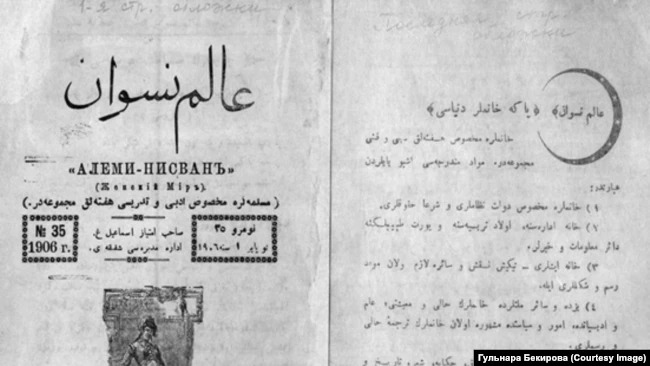
Українці з кримськими татарами майже водночас спробували відновити власну державність. У 1917 році у
Бахчисараї проголосили Кримську Народну Республіку – першу демократичну республіку та першу країну з
виборчими правами для всіх жінок у мусульманському світі.
5 фактів про український космос
Чумацький шлях. Українці зберегли до сьогодні свою власну назву галактики, у якій розташована
Сонячна система, а також усі зорі, які ми бачимо неозброєним оком.
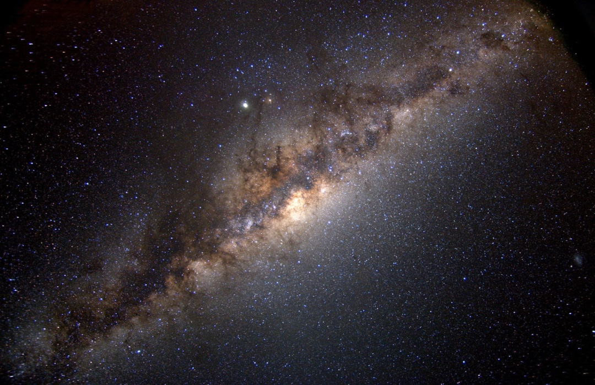
«Дивлюсь я на небо та й думку гадаю» – перша пісня, яка прозвучала у космосі. Її проспівав
український
космонавт Павло Попович на кораблі «Восток-4» спеціально для конструктора космічних кораблів українця Сергія
Корольова. Його Ілон Маск, засновник космічної компанії SpaceX, назвав одним з найкращих фахівців у галузі.
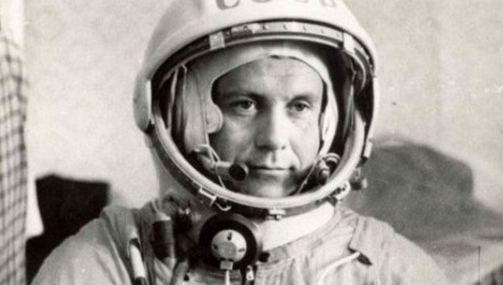
Вбив російського царя і створив схему ракети у камері смертників. Миколу Кибальчича засудили до
страти через
створення надпотужної бомби, якою народовольці вбили царя Олександра ІІ. У камері смертників Микола
Кибальчич встиг створити проєкт летючого пристрою з реактивним двигуном і за кілька днів до страти передав
його своєму адвокату.
«Проклав американцям шлях до Місяця». Уродженець Полтави Юрій Кондратюк розробив «теорію
зупинки» на
небесному тілі з сильним гравітаційним полем. Ще студентом гімназії він зрозумів, як забезпечити посадку та
зліт усього космічного корабля. Уже через 40 років американці успішно використали розрахунки Юрія Кондратюка
під час висадки астронавтів на Місяць.
«Ракети родом з України». Українські підприємства й досі допомагають створювати світові ракети.
Так,
європейська ракета Vega має український двигун, який розробило державне підприємство «КБ «Південне». Ракету
вже 17 разів успішно запустили у космос, востаннє – у серпні цього року. Вона доставила на орбіту супутники,
які досліджуватимуть космос.
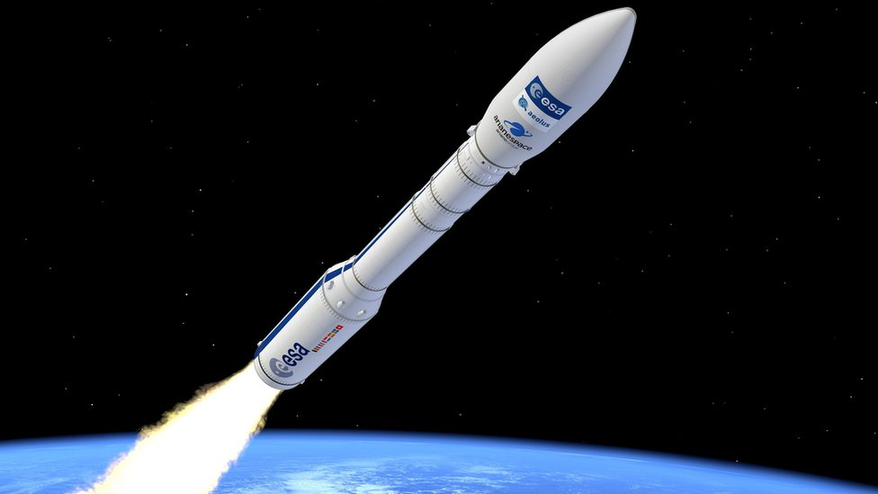
5 цікавих постатей
Ерцгерцог Вільгельм Габсбурґ так захопився українською мовою та культурою, що це забрало його
життя. За любов до вишиванок отримав прізвисько Василь Вишиваний, він писав вірші українською, командував
загоном Українських січових стрільців, а згодом став міністром УНР. Радянські агенти викрали його у Відні, а
потім засудили до 25 років тюрми за спробу створення «самостійної України».
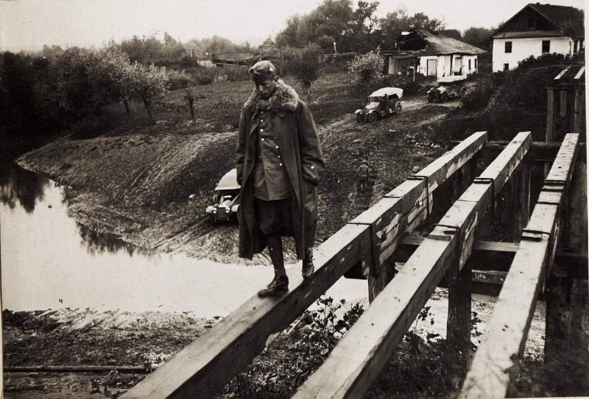
Український льотчик Іван Даценко з-під Полтавипотрапив до Канади, одружився там з дочкою вождя
племені ірокезів і згодом сам став вождем. Їхні діти розмовляли українською мовою. Усе почалося з війни,
коли у 1944 році Даценко був поранений та полонений під Львовом. Він утік з лікарні в ліси, які контролювали
підрозділи УПА. Є думка, що Даценко міг опинитися у лавах повстанців, а вже через них потрапити до Канади.
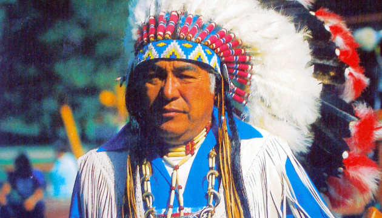
Промисловець Олексій Алчевський на честь якого названо місто Алчевськ, – з числа
індустріалістів-власників заводів на Донеччині, які опікувалися українською мовою та культурою. Його дружина
розповідала, що Алчевський був «фанатичним українцем», вкладав величезні гроші в український рух – і це в
період дії суворих заборон українства кінця XIX сторіччя.
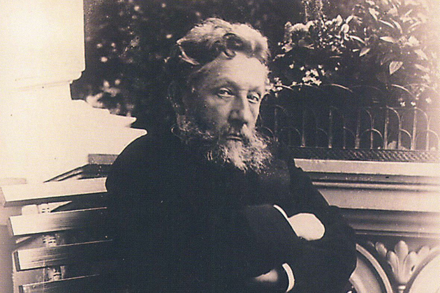
Анастасія Маркович – та сама Настя з приказок«Іван носить плахту, а Настя – булаву», «Іван теля
пасе, а Настя булаву несе». В історії Анастасія Маркович, дружина Гетьмана Івана Скоропадського, згадується
не лише як героїня приказок, а й як справжня правителька Війська Запорозького. Через свою гостру вдачу,
владний характер та залученість до урядових справ її також називали «гетьманом у спідниці».
Галина Кузьменко, вчителька з Гуляйполя – відома значно менше за свого чоловіка Нестора Махна,
але саме вона намагалася українізувати його повстанську армію. Жінка шила синьо-жовті прапори, перекладала
прокламації українською мовою і намагалася переконати Махна зробити вибір на користь національного проєкту,
а не комуністичного.
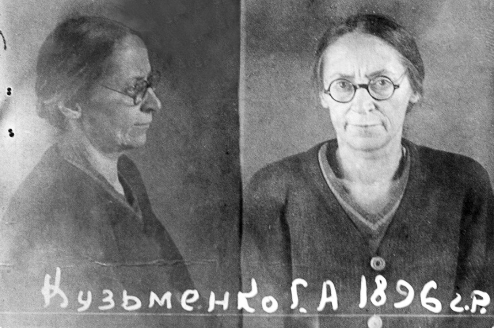
5 рандомних фактів
Російський письменник і в’язень ГУЛАГу Олександр Солженіцин писав, що перша хвиля опору в сталінських
таборах почалася після прибуття до них українців. За його словами, саме вони привезли до ГУЛАГу «бацилу»
бунту.
«Той, хто каже, що незалежність впала нам з неба, не знає, що ми діставали по 10 років тюрми і заслання»: ще
у 1960-х роках Левко Лук'яненко вирішив, що Україна має бути незалежною демократичною державою. Для цього
він створив підпільну організацію, яку пізніше викрило КДБ. Лук’яненко провів 25 років у тюрмі та засланні.
Саме він у своєму зошиті написав проєкт Акту про незалежність України, який ухвалили 24 серпня 1991 року.
У 1976 році під час матчу між СРСР та НДР у Монреалі канадець українського походження Данило Мигаль вибіг на
поле у вишиванці та з прапором України і станцював гопак. На самому стадіоні 150 українців вивісили плакат
із написом «Свобода Україні!».
Ще у 1939 році кремлівська верхівка виявила, що з усіх республік саме на Україну припадає 60% усіх
розвіданих запасів газу. Так Україна стає одним із найбільших експортерів блакитного палива в Європі, а у
1975 році б'є власний рекорд видобутку – майже 70 мільярдів кубометрів.
Україна була єдиною республікою колишнього СРСР, яка провела референдум на підтвердження проголошення
незалежності, що повністю відповідало чинному на той час законодавству.